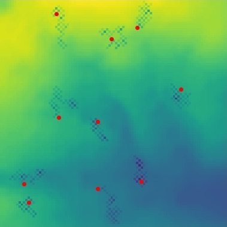

Programming for GIS: Core Skills
Assessment 1: Python

An ABM that simulates a set of agents moving
around their environment, eating and sharing
resources with other agents in the model.
Programming for GIS: Core Skills
Assessment 2: Python

Twitter mining software that allows the user
to search for Tweets by key word or username
and then carry out sentiment analysis.
Big Data & Consumer Analytics
Assessment 1: R
Manipulation and analysis of Dunnhumby
transactional data using R to investigate
the impact of coupons on sales.